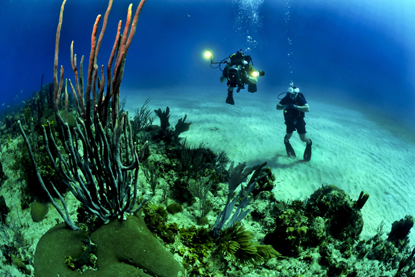
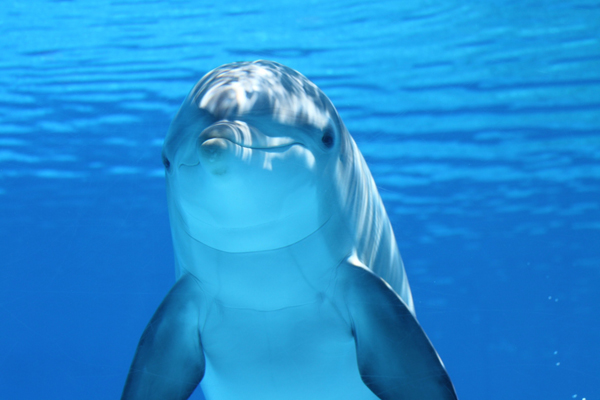
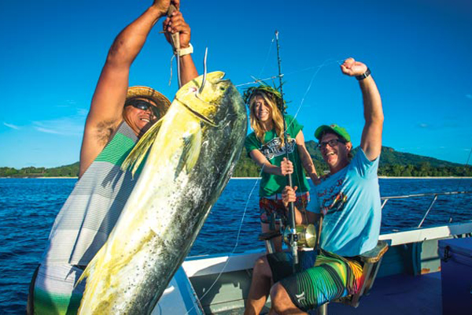
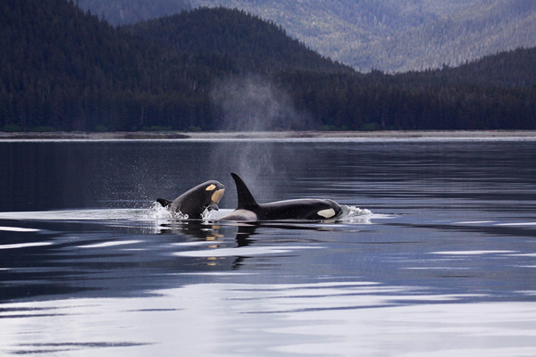
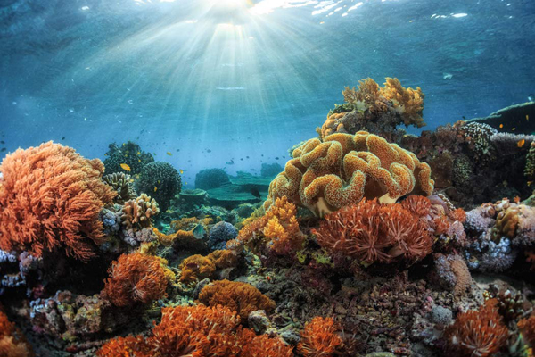

Divers survey an endangered reef.

A dolphin recently reintroduced to the wild.

Working to ensure sustainability.

Two Orcas tracked by our Alaskan initiative.
Scientists off the coast of Scotland
A volunteer frees a sea turtle.
Volunteers clean oil off a pelican.
Our partners in Japan.

A reef successfully saved.